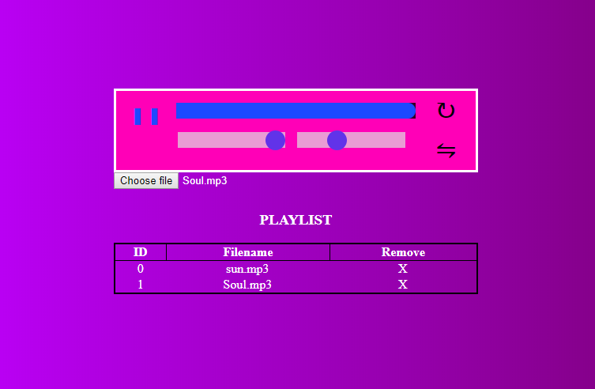

MVC Furniture Store - C#/ASP.net/HTML/CSS and Javascript
Final project for OOP course was making a storefront in ASP.nets MVC solution using c#, html, css and javscript inorder to see all of its features please click on sourcecode to go to the github pages there you can also find a video of the page functions.
Sourcecode

Audio Player - HTML/CSS/Javascript
A web based audio player using Javascript and file reading
Live Demo Sourcecode
Tenka - HTML/CSS/Javascript
A web Design made using CSS Grid,Flex and (minimal) Javascript it simulates a company page more to show of the design principles and to make a page look as good on mobile as on desktop
Live Demo Sourcecode